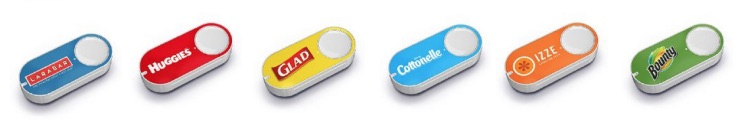
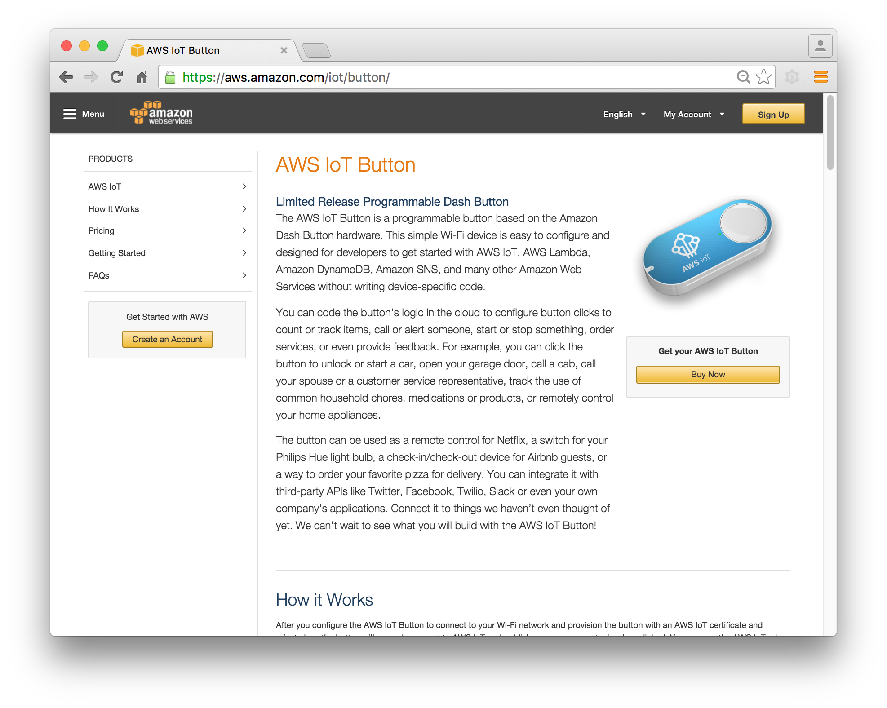
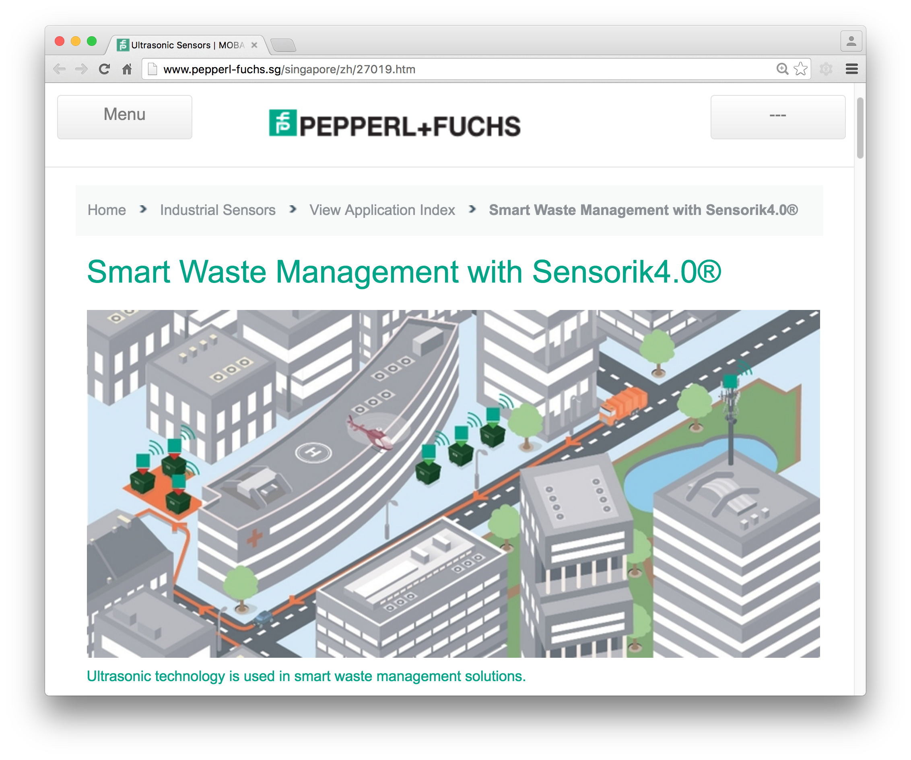
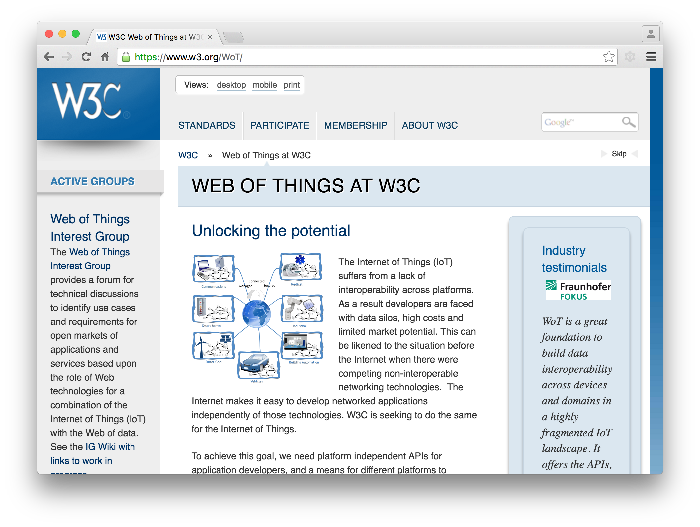
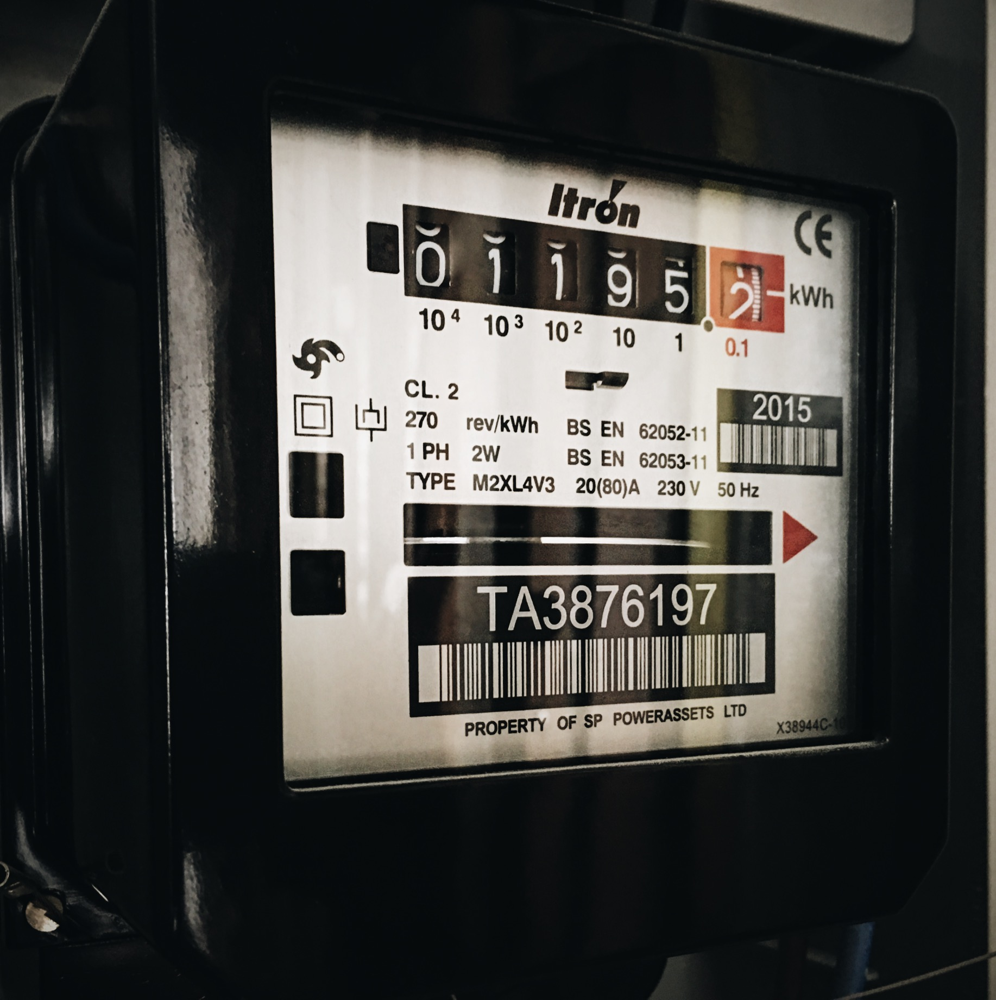
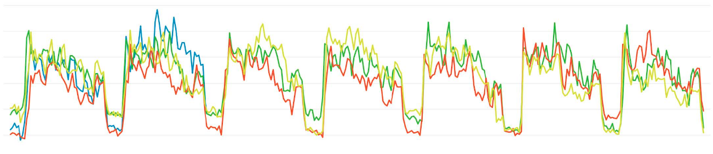
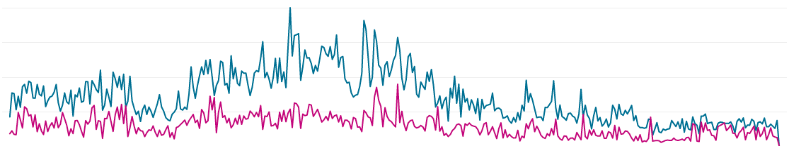
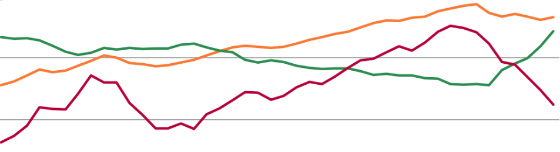

sense
sensibility
use ← → keys to navigate
hi! i'm sayan.ee
i 💖 rdrc = fun + code
emojis + hardware + friends
wheel is an extension of the foot
book is an extension of the eye
clothing is an extension of the skin
electric circuitry is an extension of the
central nervous system
| Compose | IFTTT Mashup Web apps |
Web of Things Mashup |
|---|---|---|
| Share | OAuth Token Encryption |
Social Web of Things |
| Find | Schema.org Semantic |
|
| Access | HTML, URL, JSON, Sockets, HTTP, REST |
MQTT, CoAP |
| Wireless | NFC, WiFi, Bluetooth, 4G |
BLE, IEEE 802.15.4, 5G, LoRaWAN |
Sensors | pressure, switch, light, proximity, water, temperature, power | cheaper & compact |
IoT platform
- 🔌 communication: sensor → rails
- ⏲ rhythm: event / periodic
- 📈 visualisation: charts + graphs
- ⚙ hooks: triggers + notification
🖲 event with http
📡 periodic with http
🌡 periodic with mqtt
🖲 event with http
WiFi |
2G/3G |
|
|---|---|---|
| range | medium | large |
| comm | device ⇔ router | device ⇔ cell tower |
| comms chip |
Broadcom BCM43362, ESP8266 |
u-blox SARA, SIM5320 |
| dev kits | Photon, NodeMCU, Huzzah, Espresso |
Particle's Electron, Adafruit's FONA |
| cost | < 20 USD | < 100 USD (data plan) |
setup
🖲switch
µ-controllerSTM32
WiFiBCM43362
server
rails
demo - http post + api
applications
IoT button
 code - firmware
if (digitalRead(ON_PIN) == HIGH) {
sendState(1);
} else {
sendState(0);
}
...
void sendState(int state) {
char path[200];
sprintf(path, "/update?key=GQL7FLZXTK35ATAO&field1=%d", state);
request.hostname = "10.0.1.22";
request.port = 3000;
request.path = path;
http.post(request, response, headers);
}
code - rails
# routes.rb
match 'update', :to => 'channels#post_data', :via => [post]
# channels_controller.rb
def post_data
feed = Feed.new
api_key = ApiKey.find_by_api_key(get_apikey)
# check write permission
# check api key
# rate limiting
feed.field1 = params[:field1]
# feed.save and render
end
📡 periodic with http
setup
📡proximity
µ-controllerSTM32
WiFiBCM43362
server
rails
demo - data
code - rails models
class Channel < ActiveRecord::Base
...
belongs_to :user
has_many :feeds
has_many :api_keys, :dependent => :destroy
...
end
class Feed < ActiveRecord::Base
...
belongs_to :channel
attr_readonly :created_at
...
end
class ApiKey < ActiveRecord::Base
belongs_to :channel
belongs_to :user
validates_uniqueness_of :api_key
end
code - rails lib
def generate_api_key(size = 16, type = 'channel')
alphanumerics = ('0'..'9').to_a + ('A'..'Z').to_a
new_key = (1..size).map {alphanumerics[Kernel.rand(36)]}.join
...
end
code - rails controllers
class FeedController < ApplicationController
def show
...
respond_to do |format|
format.html { render :text => output }
format.json { render :json => output,
:callback => params[:callback] }
format.xml { render :xml => output }
format.csv
format.text { render :text => output }
end
end
end
applications
urban waste management with ultrasonic sensors
examples
standard
🌡 periodic with mqtt
| standard | RFC 7230 (1.1) RFC 7540 (2) |
OASIS 3.1.1 | RFC 7252 |
| Application Layer | HTTP |
MQTT |
CoAP |
|---|---|---|---|
| Transport Layer | TCP | TCP / UDP | UDP |
| exchange | Req / Res | Pub / Sub | Req / Res |
| header size | > 200 bytes | 2 bytes | 4 bytes |
| data format | ASCII / Text | Binary | Binary |
| power usage | high | low | low |
setup
🌡temperature
µ-controller ESP8266
WiFi ESP8266
server
rails

demo
firmware - mqtt publish
#include < PubSubClient.h >
#define mqtt_server "10.0.1.22"
#define topic "8DH1XFGBT2IJX6F8/field1" // topic = api_key/field
void setup() {
...
client.setServer(mqtt_server, 1883);
}
void loop() {
...
sensorValue = analogRead(A0);
temperature = (sensorValue / 1024.0) * 3.3 * 100.0;
...
client.publish(topic, String(temperature).c_str(), true);
}
rails - mqtt subscribe
# bin/mqtt_sub
#!/usr/bin/env ruby
require 'mqtt'
MQTT::Client.connect('localhost', 1883) do |c|
subscription = '8DH1XFGBT2IJX6F8/field1'
c.get(subscription) do |topic, message|
api_key, field = topic.split('/')
feed = Feed.new
# check api key and other checks
feed[ field ] = message
# feed.save and render
end
end
applications
home power meter

| daily |  |
| weekly |  |
| yearly |  |
stop? reset? action? notify? trigger? change?
💉 🏥 🚛 🛳 🚰 ⛽ 🤖 ⛑ 🌳 🌲 🌸 🌔 🍄
wheel is an extension of the foot
book is an extension of the eye
clothing is an extension of the skin
electric circuitry is an extension of the
central nervous system
The extension of any one sense
displaces the other sense and
alters the way we think
the way we see the world and ourselves~ Marshall McLuhan, The Medium is the Message
let's explore the senses around us!
✨ thank you ✨ slides at talks.sayan.ee/sense
References 📚
- thank you Sam, Ming Ding, Hwee Xian, Chinmay
- When we build talk by Wilson Minor
- Medium is the Message by Marshall McLuhan
- Web of Things at W3C
- Wireless constaint triangle by Yeo Kheng Meng
- text background image by APOD
- Web of Things architecture and thesis
- Internet of Things talk by Vlad Trifa
- Data graphs 1, 2 and 3
- MQTT & IoT protocols comparison
- Smart waste management by Pepperl+Fuchs
{kind=link}
{kind=link}